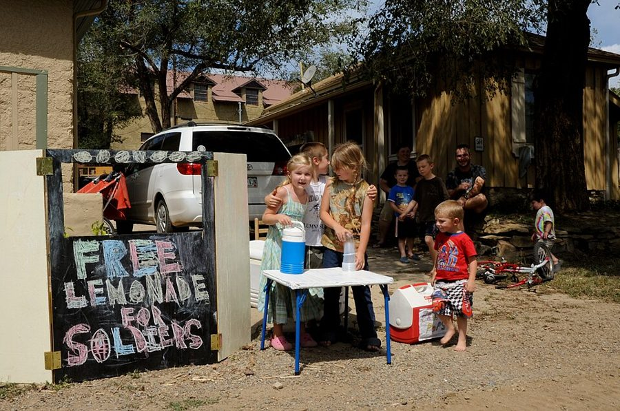

n00b
… answering her “n00b-ish” questions …
菜鸟（newbie 的网络写法）
用两个零代替 oo，游戏和论坛里的写法；-ish 是「有点儿」。
刚当上经理的头三个月最乱。这一章问的是：你是怎么当上经理的？作者把上任分成四种：从团队里被分出一块来带、从零带起一个新团队、空降到现成的团队、接下离开的上司留下的整个团队，每种各有顺手和难办的地方。她自己走的是第一种，在老同事和自己手上的设计活之间都摔过跤。读的时候先认出自己是哪一种，只读那一节也行；再留意贯穿四种的一条线：头几个月先弄清楚，再动手改。章末她说了自己花了多久才觉得会当经理。
上一章回答「经理是干什么的」：靠目标、人、流程，让一群人一起得到更好的结果，结尾还分清了领导力和管理。这一章从「上任」这件具体的事讲起，按四种上任方式分节，作者请读者像读互动小说那样，只翻到自己那一节。下一章讲带小团队：信任和一对一面谈。这一章里「老同事不再跟你说真话」「从头建立信任」，作者都说下一章再细讲。
作者说团队到四五个人，就该计划收缩自己手上的活。这是大公司高速增长时期的经验；2023 年以后，不少大公司反过来要经理多带人、自己也动手。读 §1 末尾时记住这个背景，详见「今天怎么看」。
同样是当经理，从团队里被提拔，和空降到一个陌生团队，头三个月难的是同一件事吗？
读的时候带着这几个问题。不用先找答案，读完回来对照「检查一下理解」。
这一章的每一节一条，按原书顺序。粗体是本站给的节名，后面是档和英文词数；下面一行是原书小标题、纸书页码和这一节开头几个英文词；再下面是译本的小標題和开头几个字，在译本电子书里搜它就能跳过去。每节标了档：「先读」是这一章的骨架，「有空」例子更多、讲得更细，跳过不丢线。读完打个勾。
先把这一章用到、作者默认你懂的几个概念讲一遍。讲的是概念本身和它在管理界的来历，作者拿它推出什么，读原书时自己看。
这是作者自己的分法，按「你是怎么走到这个位子上的」来分。学徒：上司的团队变大了，分一部分给你带。开拓者：你是一个新团队的头一批人，现在要把它带大。新上司：空降到一个已经运转的团队，可能在本公司，也可能在新公司。继任者：上司要走，你接下他的整个团队。
管理学里更常见的是按「你接手的是什么局面」来分。Michael Watkins 在《The First 90 Days》里用 STARS 五种局面：从零起步、扭转颓势、加速增长、重新调整、保持成功，各要不同的打法，比如扭转颓势就得尽快动手。两种分法可以叠着用：先看自己是从哪条路上来的，再看接手的是什么局面。
在这一章：§0 列出四种，§1–§4 一种一节；每节都分「可以利用的」和「要当心的」两半，开拓者和继任者有几条让读者回头看学徒那节。
研究这个转变最有名的是哈佛商学院的 Linda Hill。她在《Becoming a Manager》（1992）里跟踪了 19 位新经理上任后的第一年。2007 年她在《哈佛商业评论》的文章《Becoming the Boss》里归纳了新经理常有的几个误解，其中三个是：以为当了经理就有了权力，其实处处要靠别人配合；以为权力来自职位，其实要靠信誉和信任一点点挣来；以为目标是让人服从，其实要的是人家真心投入。
从同事升上来的人还多一层难处：昨天还一起吐槽上司，今天你就是那个上司。常见的坑有三个：不好意思谈表现，批评说得含含糊糊；对老朋友偏松，或者为了避嫌偏严；把职位当成说话的分量。
在这一章：§1 学徒「要当心」的头一条就是和老同事的新关系；§4 继任者会遇到同样的事，书里让读者回 §1 看。
「头 90 天」在管理界成了固定说法，很大程度上要归功于 Michael Watkins 2003 年的《The First 90 Days》（2013 年出了修订版）。他的核心想法是：新上任的人越快走到「盈亏平衡点」，也就是对组织的贡献追上自己消耗的资源，就越不容易失败；为此要加速学习、看清局面、争取几个早期的小胜利、建立关系和同盟。作者没有引 Watkins，只是章名和章末都以三个月、九十天为单位。
常和它一起出现的另一个词是「倾听之旅」（listening tour）：新上任的人头几周挨个约团队成员、合作方、客户谈，多问少说，听完再拿出计划。作者给新上司的建议和它很像。
在这一章：§3 说新上司头几个月的主要工作是听、问、学，也说宽限期通常是三个月左右；章末回到「头九十天」。
以后带人碰到这些事，从这里查。每张卡先说动手前要想清楚什么，再用本站的话转述作者的办法（不照抄原书的清单），然后是书外的补充和最容易犯的错，最后指回书里讲它的那一节和纸书页码。全书的情境卡汇总在情境卡。
书里：The Apprentice，What to Watch Out For 的头一条，纸书 p.42–43
书里：The New Boss，纸书 p.47–51
书里：The Successor，纸书 p.51–53
读英文纸书可能卡住的地方，按原书顺序分节排。灰色斜体是原文里连续的几个词，后面是纸书页码，翻书找得到；标「每个字都认识」的，是每个词都眼熟、合起来意思却变了的，最容易读错。点「记下」收进词本。
按在书里出现的顺序排，标题前是节号。只讲到读懂这一章需要的程度。书里的同事和下属（Rebekah、Robyn Morris，还有作者那几位没写名字的朋友）是普通人，这里不另作介绍。
Choose Your Own Adventure 是美国 Bantam 出版社 1979 到 1998 年出的一套儿童互动小说，用第二人称写，读者就是主角：读几页就要做个选择，选这条翻到某一页，选那条翻到另一页，不同的选择通向不同的结局。这套书八九十年代在美国极流行，卖出两亿五千万册以上。作者借这个名字，请读者照自己的上任方式跳到对应的一节，不必从头读到尾。
引言里，作者第一次和下属开一对一：对方前一天还是坐在旁边的设计师同事，见到她时一脸不情愿。这一章补上了后续：提拔她的是团队负责人 Rebekah，她有意安排了这次过渡，先只给作者几个觉得她带得了的人，还帮她和那位一开始抱着怀疑的下属处出了很好的关系。读到这里，引言那个尴尬的场面就有了下文。

第 1 章作者用柠檬水摊讲管理：一个人摆摊时什么都自己做；生意好了，请邻居来帮忙，你的工作就从挤柠檬变成让大家一起把摊子经营好。这一章说学徒型的新经理「还在卖柠檬水」，指的是一边带人，一边还担着自己的设计活。她自己在团队六个人左右时还在主导一个很耗时间的复杂项目，结果两头都没做好。下面的示意图是本站画的。
作者给开拓者举的例子之一，是从车库里的三个人长到十个全职员工的创业者。车库是硅谷创业的老形象，最有名的是上图这间：1939 年，Bill Hewlett 和 David Packard 在这里合伙创办了惠普。它后来被列为加州历史地标，名称就叫「硅谷的诞生地」。作者的另一个例子更平常：一家机构的第一位会计，后来要组建整个财务部门。
新人最怕的是开会时满屋子缩写：IC（独立贡献者）、PM（产品经理）、EM（工程经理）、GTM（上市计划）……作者在这一节自己演示了一个新人问题：括号里问「IC 是什么的缩写」，答案放在页脚注里。全书最常用的缩写，她拿来开了个玩笑，意思是这种问题尽管问。在中国的互联网公司，对应的是「对齐、抓手、闭环、颗粒度」这类说法，新人一样听不懂，也一样该问。
作者说这是一句「有名的格言」，没写是谁说的。网上常把它安在王尔德（Oscar Wilde）头上，但专门考证引语出处的网站 Quote Investigator 查过：王尔德的作品和收录很全的王尔德语录集里都没有这句，它找到的最早的相近说法出自 1967 年一篇别人的文章，这句话在网上流传时也没有署名。所以作者不署名是对的，转述时别替她加上王尔德。
对着译本读这一章时，下面这些地方会把人读歪。方框里是译本的原句，在译本电子书里搜它就能找到；灰色斜体是英文原文那一处，后面是纸书页码。只收意思错了、反了、漏了的，措辞上的出入不收。全书的勘误汇总在译本勘误。
… Is your team cagey about deadlines …
译本：「你的團隊是否沒完沒了地做一件事？」
cagey 是说话躲躲闪闪、不肯透底。原文问的是：团队对截止日期是不是总含糊其辞、不给准话。译本变成了「一件事做个没完」，是另一种毛病。列「要改的地方」时按原文理解。
… need to fix what isn’t broken …
译本：「你不一定需要解決有問題的地方」
原文用的是俗话「没坏就别修」：好的地方不必改，但也别困在「一向如此」里。译本读成了「有问题的地方也不一定要解决」，意思正好反了，和后半句「别困在时光机里」也接不上。
How do you like to be recognized
译本：「可以獲得什麼樣的獎勵」
recognized 是工作做得好时被看见、被肯定：当众表扬、私下一句话、让上面的人知道。问这个是想知道对方喜欢怎样被肯定，不是问想要什么奖品或奖金。
One of the biggest mistakes new bosses
译本：「新手主管會犯的最大錯誤」
new bosses 是这一节说的「新上司」：空降来的经理，作者说他们多半已经带过人。译成「新手主管」，像在说没经验的人才犯这个错。原文还说的是「最大的错误之一」，不是唯一最大的。
last manager left big shoes to fill
译本：「我們的前主管留下了龐大的責任」
这句俗话是说前任太出色，后来的人很难接得住。那位朋友的开场白先夸前任、再承认自己会磕磕碰碰，所以才讨人喜欢。读成「前任留下很多责任」，这层谦虚就没了。
in attempting to do both, I was doing neither well.— §1，纸书 p.44。本站译：想两头都做，结果两头都没做好。
口气是自嘲加认错。关键词是 neither：不是「做得差一点」，是两边都不及格。这句译本：「試圖兼顧，結果就是兩件事都做不好」，译得很准。容易被读成「经理不该再写代码」；她说的是撑过了能撑住的那个点，团队到四五个人就该有计划。今天的大公司对这件事的看法有变化，见「今天怎么看」。
In your first few months, your primary job is to listen, ask questions, and learn.— §3，纸书 p.49。本站译：头几个月，你的主要工作是听、问、学。
这是在下判断，针对的是「急着表态证明自己」。关键词是 primary：主要的，不是唯一的。同一节里她也叫新上司主动约人一对一、主动跟上司说哪里不顺，所以「听」不等于什么都不做。什么时候等不起三个月，见「本站怎么看」。
How long will it take to feel like I know what I’m doing? … It took me about three years.— §4，纸书 p.53。本站译：「要多久才会觉得自己知道在干什么？」……「我大概用了三年。」
全章的收尾，口气是坦白。章名叫「头三个月」，最后却说自己用了大约三年，同一段开头就说「时间不能代替自在」。头三个月熟悉的是日常，自在要久得多。对刚上任、觉得只有自己慌的人，这句话比任何技巧都管用。
读完这一章再看。下面是作者在这一章里的主张，由本站按主张之间的逻辑重新组织，不按原书的顺序；每条后面是节号，拿不准就回书里那一节再读一遍。
作者把上任分成四种：被上司分出一部分团队来带、从零带起新团队、空降到现成的团队、接下离开的上司的整个团队。她说不同的路，头三个月里容易和难的事不同，所以请读者找到自己那一种去读。她问过很多新经理，最常听到的难处是要学的太多。
§0她说学徒通常是最容易的转变：上司带着，又熟悉团队。难的是和老同事：要谈对方的前途和长处，以前包装成建议的批评现在要直说，因为团队的结果归你了。大家在你面前少说话是正常的，要靠你更努力建立信任。继任者也一样。
§1她说新上司通常有三个月左右的宽限期，该趁机多问，连看似蠢的问题也问；别人对下属的评价先存着，自己下结论。她认为新上司最大的错误之一是急着表态显示能力，头几个月的主要工作是听、问、学；工作和预想不同时，要主动跟自己的上司说。
§3学徒要放下自己的 IC 工作：她说她看到几乎每个学徒型经理都在这上面撑过头，团队到四五个人就该有收缩的计划。继任者要放下「照前任那样做」的压力，改变是改进的前提，照自己的长处来。开拓者要把脑子里的做法讲出来，并向公司内外的同行求助。
§1她说头三个月过完，日常会变得熟悉，但那种新来的不自在可能持续几个月甚至几年。新经理问她多久才觉得知道自己在做什么，她说自己用了大约三年。
§4合起来：先认清自己是从哪条路走上来的，提前知道那条路上的坑；不管哪条路，头几个月都要多问、多听、主动建立信任，也要舍得放下以前的角色。
这本书 2019 年出版。下面挑出这一章里能被研究或后来的事情检验的说法，分「书里 / 当时 / 今天」几栏，并给一个结论。结论判的是标题里「书里的说法：」后面那一句。全书的这一节汇总在今天怎么看。
读完作者的主张，再看它站不站得住。每一块摆出三样：主流怎么看，作者怎么看，本站的评论。最后一句是本站对这一章的总体判断。
主流看法：Michael Watkins 的《The First 90 Days》主张先看清局面再定打法：接手的是需要扭转颓势的团队，就得尽快动手；接手的是运转良好的团队，难处在于既别把好东西改坏，又要找到更上一层的办法。他也强调要尽早拿下几个小胜利，让大家看到你带来了什么。
作者的看法：新上司最大的错误之一是急着表态显示能力；头几个月的主要工作是听、问、学，并和自己的上司对一对什么算正常。§3
本站的评论：作者心里的情形多半是 Facebook 里运转中的团队，空降来的是有经验的经理。在这种局面下，「先听」是对的默认做法，译本：「新官上任三把火通常會有副作用」也说得妙。但「听」不等于干等：挑一件大家都嫌烦的小事尽早改掉（比如那个没人想去的长周会），比三个月后一个大计划更能赢得信任。团队真在着火时，问题还是要先问，只是要用天来算，不是用月。
主流看法：Linda Hill 对新经理的研究发现，很多人以为当了经理就有了权力，其实下属的配合要靠信誉和信任挣来；目标也不是让人服从，而是让人真心投入。
作者的看法：别躲开谈前途和长处的谈话；批评要直说，因为团队的结果归你；老同事变得少说话是正常的，要你更努力建立信任。§1
本站的评论：从同事升上来，最难的往往是在同一段关系里加进「评价」这一层。作者好在坦白：她承认问老朋友「你一年后想做到什么」很别扭，也承认被下属瞒着时很意外。朋友可以继续做，但要接受关系里多了一层：你会给他评级，他会在你面前少说几句。在讲究「兄弟情」的团队里，最伤人的不是一次直说，而是评级时的偏袒或者避嫌；两种都会被所有人看在眼里。
主流看法：Herminia Ibarra 2015 年在《哈佛商业评论》的文章《The Authenticity Paradox》里提醒：到了新岗位，死守「真实的自己」反而会限制成长；更好的是从不同的榜样身上借做法、试着来，她称之为一种会调整的真实。
作者的看法：不必事事照前任的做法；改变是改进的前提，照自己的长处去当经理，比活成别人的样子更容易成功。§4
本站的评论：两边说的是两件事，不矛盾。作者反对的是硬套前任的样子，Ibarra 反对的是把「我就是这样」当成不去学的理由。接班人最好两样都做：前任做得好、团队离不开的那几样，先借来用，不必为了显得不同而丢掉；自己不擅长又不得不做的，学着做，不拿「做自己」挡掉。
本站的总体看法：一章短而实用，四种上任方式的分法让人一下子认出自己的处境，「先听、敢问、主动建立关系」几条朴素但做到的人不多。打折扣的地方：它默认的是运转良好、还在扩张的硅谷团队；接手烂摊子或在收缩期上任，要动手得更早，「四五个人就收手」也要按公司的风向调整。
处境都是本站编的，不是书里的例子。先自己判断，想好了再点开看本站的分析；有的题没有唯一答案，分析里讲取舍。全书的判断题汇总在判断题。
你半年前被提拔为组长，带 3 个后端，自己还是订单服务的主力，大约一半时间在写代码。上周上司告诉你，下季度批了 3 个名额，组里会变成 7 个人。你有三个打算：
A. 等新人到岗再说，先把订单服务的重构写完，免得交接一半更乱。
B. 现在就挑一个人接订单服务，接下来两个迭代让他主写、你评审，你的时间挪去招聘和准备带新人。
C. 订单服务自己留着，新人来了做外围的活，这样你不会丢掉技术。
你选哪个？各有什么风险？
B 最接近书里的建议：团队到四五个人时就该有收缩自己 IC 工作的计划，你现在正站在这个点上。计划要趁现在定，因为新人到岗那几周正是你最没空的时候。B 的代价是重构会慢一些，接手的人会犯你不会犯的错，这笔学费值得付。
A 看着稳妥，其实是把交接推到最忙的时候。C 的顾虑书里也写过：作者当年也怕丢了手艺，结果拖到六个人左右，两头都没顾上。保持技术可以靠评审设计和代码，不必占着关键路径。
书里对应：§1 的最后一部分，纸书 p.43–44。
你是公司里第一个、也是唯一的 SRE，公司两百人。今年批了两个名额，你要从零组一个小组，值班怎么排、事故复盘怎么做，心里没底。前同事拉你进了一个各家 SRE 负责人的群，下周聚餐。你在想带什么去聊：
A. 把上个月一次大事故的复盘文档带去，请大家逐条点评。
B. 只讲问题的样子：十几个服务、两个人值班、告警太多，问大家怎么排班、怎么定告警标准。
C. 不去了，外面的经验不一定适用，先在公司里问后端几个组的经理。
你会怎么选？
B 最好，而且最好和 C 一起做。作者给开拓者指了两条求助的路：公司里负责相关职能的经理，和公司外做同样工作的人。后端组的经理多半早碰过值班和告警的问题，又懂你们的系统；外面的饭局能告诉你别家怎么做、行业在往哪走。
作者特意说，她和别家公司的设计主管喝咖啡时不谈工作的具体细节。A 的问题就在这里：复盘文档里有架构、客户影响和内部数字，带出去可能违反保密义务，聊得再有收获也不值。
书里对应：§2 后半，纸书 p.46。
你从一家大厂跳到五十人的创业公司当后端负责人，入职第二周。周会上大家在争要不要把单体应用拆成微服务，技术负责人老陈主张拆，方案已经画好。你在上家公司亲历过一次拆分，拖了一年多，最后又合回去一部分。你很想说话，有三种说法：
A.「我们上家公司就是这么拆的，踩了一年坑，我建议别拆。」
B. 先不吭声，等熟悉了代码再说。
C.「我是新来的，先问几个问题：这次拆分最想解决什么？现在最疼的地方有数据吗？」会后再约老陈，单独讲上家公司的经历。
哪种最好？如果方案明天就要定，会不会不一样？
C 最好。作者说新上司最大的错误之一是急着表态证明自己；你还不了解这家公司的系统和约束，上家的经验未必适用。C 用足了新人的身份：问目标的问题，新人问最自然，有时还能让一屋子人发现大家还没对齐。经验留到会后私下讲，老陈更容易听进去。
B 浪费了宽限期，也浪费了你真正有价值的经历。如果明天就要定、拆了又很难回头，就该在会上说出顾虑，但说成「我见过一个风险，供参考」，而不是「别拆」。
书里对应：§3，纸书 p.47–49。
先在心里答，再点开。答错的那题，回书里把对应那一节再读一遍。
一张列现在团队好的地方，一张列可以更好的地方。两张对着看，就有了改什么、不改什么的初步计划：没坏的不用修，但也别困在「一向如此」里。
她后来认为这很正常：下属怕打扰她，也怕在她面前留下不好的印象。该由她更努力去建立信任，这是下一章的主题。
公司里负责相关职能的其他经理（她常去问工程部门的经理朋友），和公司外做同样工作的人（她常和别家公司的设计主管喝咖啡，但不谈工作细节）。
她谢过对方，但决定自己下结论；后来和那位下属关系很好，那人一年内升为组长。说明「一张白纸」两头都适用：你可以重新开始，下属也可以，所以先往好处想每个人。
关键是他主动跟作者说了。他们一起定了计划，让他和合作方坦诚谈；对方听到后马上主动拉他进讨论，也给了他沟通上的建议。
接手以后才发现前任在幕后做了多少事，比如替团队挡掉其他团队的大量请求；现在这些请求全找上了自己。
用一句话说这一章：
想一想：你第一次带人（或者你见过别人第一次带人）的头三个月，最难的是什么？现在回头看，那是作者说的那一种上任方式的典型难处，还是只属于那个团队、那个时候？
读过又忘了，从这里想起来。挑的是这一章最值得记住的故事、办法和说法，不按原书顺序；每条后面是节号，想细看就回书里那一节。全书各章的这一节都收在全书回顾。
一句话：先认出自己是怎么上任的；头三个月熟悉日常，真正自在可能要三年。
作者问新经理什么比预想的难，一位笑着引了墙上海报的一句话。最常听到的回答就是这个意思：要学的太多，快被压垮了。
§0引言里那位不情愿的下属，后来和作者处得很好，是上司 Rebekah 帮的忙。学徒通常最顺，因为一路有上司带着。
§1团队到六个人左右，作者还在主导一个大项目；一有下属要多花时间、要准备几场评审，自己的活就垮了。四五个人时就该计划放手。
§1一位新经理先说自己是新来的，再问出这一句。满屋的人停下来，发现大家忙着细节，还没对齐目标。
§3作者的一位朋友到了新团队，直说大家可能还不愿什么都跟新来的人讲，然后先讲自己最大的失败。作者说这正是「做给人看，别光说」。
§3深受爱戴的经理走了，接班的人说：那就多几个人站出来，把空缺补上。一年后团队很好。
§4